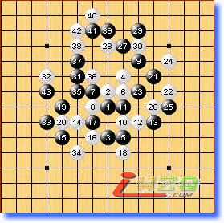

第十届世锦赛A组第七轮略评
#1 第十届世锦赛A组第七轮略评 作者：有志青年 发表时间：2007-8-13 23:27:34
第一局 黑方 oll 白方 Kozhin 黑胜
看Kozhin的棋有些乏味，甚至有点迷信色彩。上局靠这个12侥幸赢了Savrasova，今天还用这个变化就让人感觉太不把别人放眼里了。虽然18变了一手，但这步棋也并不好到哪里去。黑棋后面的下法中规中矩，白棋也只能亦步亦趋。36逆止黑能胜吗？

第二局 黑方 purk 白方 karlsson 黑胜
本局至13在本届世锦赛出现多盘，实战老将14改变策略，但实战的效果并不理想。黑17后白棋将面临如何消减下方黑势的巨大压力。18、22好棋，黑棋只能方在上方，白棋终于找到一条迂回防守的路线。43局部是好形，估计白方是在读秒中防守失误的。
第三局 黑方 lio 白方 sushkov 白胜
这盘流星到29，我在2001年经纬杯十强赛上对陈伟那局用过一次，可惜在必胜情况下没看出vcf。后来查谱发现，之前国际上早有过29的变例。sushkov的30很谨慎。如果不是lio最后出错，白棋要赢不是很容易。
第四局 黑方 okabe 白方 taimla 白胜
或许okabe还没从上轮负于吴镝的情绪中摆脱出来，本局下得有些凌乱。35实在看不出有什么必要，36防后黑必败了。
第五局 黑方 Savrasova 白方 Chingin 白胜
本局与第四局至22相同，23后的下法黑棋并不好。虽然都是最后因为防守问题而输掉，起因还是黑棋定式选择与己不利导致的吧。估计此变化后面的比赛不会再见到了。
第六局 黑方 山口 白方 吴镝 白胜
吴镝赢得很精彩！李洪斌、殷立成评吴镝完胜山口釉水九段